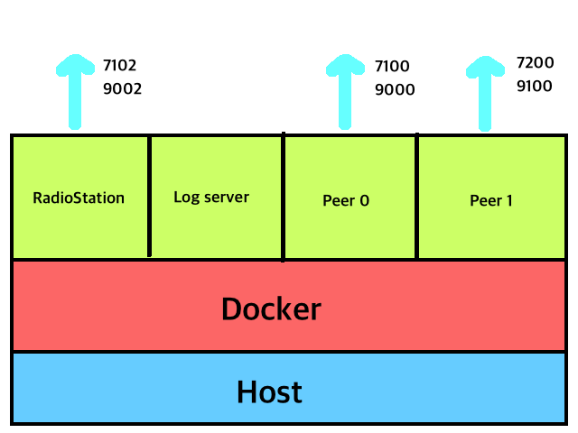

Local computer에서 RadioStation과 2개의 Peer로 Blockchain network 구성하기¶
목적¶
자신의 컴퓨터상에서 Docker를 이용하여 RadioStation과 Peer 2개로 구성된 네트워크 환경을 구성하고 정상적으로 동작하는지 테스트를 합니다. 다음의 그림과 같은 구조로 네트워크가 구성이 됩니다.

디렉토리 구성¶
이 문서의 내용을 따라하게 되면 다음과 같은 디렉토리 구성이 만들어지게 됩니다.
├── conf
│ ├── channel_manage_data.json
│ ├── peer_conf0.json
│ ├── peer_conf1.json
│ └── rs_conf.json
├── fluentd
│ └── etc
│ └── fluent.conf
├── logs
├── storageRS
├── storage0
├── storage1
├── start.sh
├── stop.sh
└── delete.sh
설정 파일 생성¶
디렉토리 생성¶
먼저 로그서버의 설정 파일 폴더를 생성하고 로그를 따로 저장할 폴더를 생성합니다. 그리고 RadioStation과 Peer의 설정파일을 따로 보관할 폴더를 만듭니다.
$ mkdir -p fluentd/etc. # 로그서버의 설정 파일 폴더를 생성.
$ mkdir logs. # 로그를 따로 저장할 폴더를 생성.
$ mkdir conf # RadioStation과 Peer의 설정파일을 따로 보관할 폴더를 생성.
설정 파일 생성 및 이동¶
log 서버의 설정¶
log 서버의 설정 파일을 작성하고 설정 파일 위치로 이동합니다. 이것은 모든 log 들을 파일로 남기는 설정입니다.
fluent.conf을 아래와 같이 만듭니다.
<source>
@type forward
@id input1
port 24224
bind 0.0.0.0
</source>
<match **> # Add your log tag to show in <>.
@type copy
<store> # Add your log tag to show in <>.
@type file # Leave log file in path.
path /logs/data.*.log
symlink_path /logs/data.log time_slice_format %Y%m%d
time_slice_wait 10m
time_format %Y%m%dT%H%M%S%z
compress gzip
utc
</store>
</match>
- 작성된
fluent.conf를fluentd/etc디렉토리로 이동합니다.
$ mv fluent.conf ./fluentd/etc
channel_manage_data.json 작성¶
이 설정 파일은 multichannel을 사용할 때에 설정하는 파일입니다. 해당 파일은 RadioStation에서 사용됩니다.
channel_manage_data.json파일을 아래와 같이 작성합니다.
{
"channel1": {
"score_package": "loopchain/default"
}
}
- ‘channel1’이라는 channel에서 loopchain/default라는 SCORE를 이용합니다.
- loopchain/default는 기본적으로 각 peer들이 가지고 있는 SCORE 파일입니다.
- 작성된
channel_manage_data.json를/conf디렉토리로 이동합니다.
mv channel_manage_data.json ./conf
rs_conf.json 작성¶
이 설정 파일은 RadioStation의 설정들을 담고 있는 파일입니다.
rs_conf.json파일을 아래와 같이 작성합니다.
{
"CHANNEL_MANAGE_DATA_PATH": "/conf/channel_manage_data.json",
"LOOPCHAIN_DEFAULT_CHANNEL": "channel1",
"ENABLE_CHANNEL_AUTH": false
}
- CHANNEL_MANAGE_DATA_PATH: channel_manage_data.json이 어디에 있는지 지정해줍니다.
- LOOPCHAIN_DEFAULT_CHANNEL: RadioStation에서
channel_manage_data.json에서 설정한 channel 중에 별도로 지정하지 않고 request가 들어오면 기본적으로 사용할 channel을 정합니다. - ENABLE_CHANNEL_AUTH: 정해진 Server들만 각 channel별로 들어올 수 있는 제한을 하는 Option입니다.
- 작성된
rs_conf.json를/conf디렉토리로 이동합니다.
$ mv rs_conf.json ./conf
peer_conf0.json 작성¶
이 설정 파일은 Peer0의 설정을 담고 있는 파일입니다.
peer_conf0.json파일을 아래와 같이 작성합니다.
{
"LOOPCHAIN_DEFAULT_CHANNEL": "channel1",
"DEFAULT_SCORE_BRANCH": "master"
}
- LOOPCHAIN_DEFAULT_CHANNEL: 해당 peer가 channel_manage_data.json에서 설정한 channel중에 별도로 지정하지 않고 request가 들어오면 기본적으로 사용할 channel을 정합니다.
- DEFAULT_SCORE_BRANCH: SCORE를 사용할 때, 어떤 branch의 것을 이용 할지를 정합니다. 기본값은 master입니다. 참고로 SCORE는 git repository로 원격 git repository의 것을 clone해서 쓰거나 따로 파일로 읽어오게 해야 합니다.
- 작성된
peer_conf0.json를/conf디렉토리로 이동합니다.
$ mv peer_conf0.json ./conf
peer_conf1.json 작성¶
이 설정 파일은 Peer1의 설정을 담고 있는 파일입니다.
peer_conf1.json파일을 아래와 같이 작성합니다.
{
"LOOPCHAIN_DEFAULT_CHANNEL": "channel1",
"DEFAULT_SCORE_BRANCH": "master"
}
- LOOPCHAIN_DEFAULT_CHANNEL: 해당 peer가 channel_manage_data.json에서 설정한 channel중에 별도로 지정하지 않고 request가 들어오면 기본적으로 사용할 channel을 정합니다.
- DEFAULT_SCORE_BRANCH: SCORE를 사용할 때, 어떤 branch의 것을 이용 할지를 정합니다. 기본값은 master입니다. 참고로 SCORE는 git repository로 원격 git repository의 것을 clone해서 쓰거나 따로 파일로 읽어오게 해야 합니다.
- 작성된
peer_conf1.json를/conf디렉토리로 이동합니다.
$ mv peer_conf1.json ./conf
Docker Container 실행¶
Docker Container를 실행하는 순서는 다음과 같습니다.
- Log 서버를 실행합니다.
- RadioStation을 실행합니다.
- Peer를 순차적으로 실행합니다.(Peer0, Peer1)
Log server 실행¶
$ export TAG=latest # 환경 변수를 설정합니다.
# Log server 컨테이너를 실행합니다.
$ docker run -d \
--name loop-logger \
--publish 24224:24224/tcp \
--volume $(pwd)/fluentd:/fluentd \
--volume $(pwd)/logs:/logs \
loopchain/loopchain-fluentd:${TAG}
# Log server 컨테이너를 정상적으로 실행되었는지 확인합니다.
$ docker ps --filter name=loop-logger
CONTAINER ID IMAGE COMMAND CREATED STATUS PORTS NAMES
06d616be61e0 loopchain/loopchain-fluentd:latest "/bin/entrypoint.sh …" 9 seconds ago Up 8 seconds 5140/tcp, 24284/tcp, 0.0.0.0:24224->24224/tcp loop-logger
$
RadioStation 실행¶
# RadioStation에서 이용할 데이타 저장 공간을 만듭니다.
$ mkdir -p storageRS
# RadioStation 컨테이너를 실행합니다.
$ docker run -d --name radio_station \
-v $(pwd)/conf:/conf \
-v $(pwd)/storageRS:/.storage \
-p 7102:7102 \
-p 9002:9002 \
--log-driver fluentd --log-opt fluentd-address=localhost:24224 \
loopchain/looprs:${TAG} \
python3 radiostation.py -o /conf/rs_conf.json
# RadioStation 컨테이너가 정상적으로 실행되었는지 확인합니다.
$ docker ps --filter name=radio_station
CONTAINER ID IMAGE COMMAND CREATED STATUS PORTS NAMES
c67e3cfa668a loopchain/looprs:latest "python3 radiostatio…" 8 seconds ago Up 8 seconds 0.0.0.0:7102->7102/tcp, 7100-7101/tcp, 0.0.0.0:9002->9002/tcp radio_station
$
Peer0실행¶
# Peer 0번에서 이용할 데이타 저장 공간을 만듭니다.
$ mkdir -p storage0
# Peer0 컨테이너를 실행합니다.
$ docker run -d --name peer0 \
-v $(pwd)/conf:/conf \
-v $(pwd)/storage0:/.storage \
--link radio_station:radio_station \
--log-driver fluentd --log-opt fluentd-address=localhost:24224 \
-p 7100:7100 -p 9000:9000 \
loopchain/looppeer:${TAG} \
python3 peer.py -o /conf/peer_conf0.json -p 7100 -r radio_station:7102
# Peer0 컨테이너가 정상적으로 실행되었는지 확인합니다.
$ docker ps --filter name=peer0
CONTAINER ID IMAGE COMMAND CREATED STATUS PORTS NAMES
f18c4e082a30 loopchain/looppeer:latest "python3 peer.py -o …" 7 minutes ago Up 7 minutes 0.0.0.0:7100->7100/tcp, 0.0.0.0:9000->9000/tcp, 7101-7102/tcp peer0
$
Peer1실행¶
# Peer 1번에서 이용할 데이타 저장 공간을 만듭니다.
$ mkdir -p storage1
# Peer1 컨테이너를 실행합니다.
$ docker run -d --name peer1 \
-v $(pwd)/conf:/conf \
-v $(pwd)/storage1:/.storage \
--link radio_station:radio_station \
--log-driver fluentd --log-opt fluentd-address=localhost:24224 \
-p 7200:7200 -p 9100:9100 \
loopchain/looppeer:${TAG} \
python3 peer.py -o /conf/peer_conf1.json -p 7200 -r radio_station:7102
# Peer1 컨테이너가 정상적으로 실행되었는지 확인합니다.
$ $ docker ps --filter name=peer1
CONTAINER ID IMAGE COMMAND CREATED STATUS PORTS NAMES
c10d2938efee loopchain/looppeer:latest "python3 peer.py -o …" 7 minutes ago Up 7 minutes 7100-7102/tcp, 0.0.0.0:7200->7200/tcp, 9000/tcp, 0.0.0.0:9100->9100/tcp peer1
$
확인하기¶
제대로 설치되고 실행이 되고 있는지 확인하는 방법은 다음과 같습니다.
RadioStation의 Channel1에 접속된 Peer들의 정보 출력¶
curl http://localhost:9002/api/v1/peer/list?channel=channel1 | python -m json.tool 명령어를 입력합니다. 정상적으로 동작하고 있다면 다음과 비슷한 메세지가 출력이 될 것입니다.
$ curl http://localhost:9002/api/v1/peer/list?channel=channel1 | python -m json.tool
% Total % Received % Xferd Average Speed Time Time Time Current
Dload Upload Total Spent Left Speed
100 1573 100 1573 0 0 64583 0 --:--:-- --:--:-- --:--:-- 65541
{
"data": {
"connected_peer_count": 2,
"connected_peer_list": [
{
"cert": "MFYwEAYHKoZIzj0CAQYFK4EEAAoDQgAE+HQPBowjyJnyinsYjiztl5i6hQ1JiWdpRmyFR1T283M4liQia7weerQQ4Qw6jDVwd+RkwHeenvR0xxovUFCTQg==",
"group_id": "9f109b10-1b8b-11e8-9ab2-0242ac110004",
"order": 1,
"peer_id": "9f109b10-1b8b-11e8-9ab2-0242ac110004",
"peer_type": 1,
"status": 1,
"status_update_time": "2018-03-05 07:21:21.848287",
"target": "172.17.0.4:7100"
},
{
"cert": "MFYwEAYHKoZIzj0CAQYFK4EEAAoDQgAE+HQPBowjyJnyinsYjiztl5i6hQ1JiWdpRmyFR1T283M4liQia7weerQQ4Qw6jDVwd+RkwHeenvR0xxovUFCTQg==",
"group_id": "c41c2488-2045-11e8-bae4-0242ac110005",
"order": 2,
"peer_id": "c41c2488-2045-11e8-bae4-0242ac110005",
"peer_type": 0,
"status": 1,
"status_update_time": "2018-03-05 07:21:27.220094",
"target": "172.17.0.5:7200"
}
],
"registered_peer_count": 2,
"registered_peer_list": [
{
"cert": "MFYwEAYHKoZIzj0CAQYFK4EEAAoDQgAE+HQPBowjyJnyinsYjiztl5i6hQ1JiWdpRmyFR1T283M4liQia7weerQQ4Qw6jDVwd+RkwHeenvR0xxovUFCTQg==",
"group_id": "9f109b10-1b8b-11e8-9ab2-0242ac110004",
"order": 1,
"peer_id": "9f109b10-1b8b-11e8-9ab2-0242ac110004",
"peer_type": 1,
"status": 1,
"status_update_time": "2018-03-05 07:21:21.848287",
"target": "172.17.0.4:7100"
},
{
"cert": "MFYwEAYHKoZIzj0CAQYFK4EEAAoDQgAE+HQPBowjyJnyinsYjiztl5i6hQ1JiWdpRmyFR1T283M4liQia7weerQQ4Qw6jDVwd+RkwHeenvR0xxovUFCTQg==",
"group_id": "c41c2488-2045-11e8-bae4-0242ac110005",
"order": 2,
"peer_id": "c41c2488-2045-11e8-bae4-0242ac110005",
"peer_type": 0,
"status": 1,
"status_update_time": "2018-03-05 07:21:27.220094",
"target": "172.17.0.5:7200"
}
]
},
"response_code": 0
}
$
Peer0의 상태정보를 출력¶
curl http://localhost:9000/api/v1/status/peer?channel=channel1 | python -m json.tool 명령어를 입력합니다. 정상적으로 동작하고 있다면 다음과 비슷한 메세지가 출력이 될 것입니다.
$ curl http://localhost:9000/api/v1/status/peer?channel=channel1 | python -m json.tool
% Total % Received % Xferd Average Speed Time Time Time Current
Dload Upload Total Spent Left Speed
100 264 100 264 0 0 19717 0 --:--:-- --:--:-- --:--:-- 20307
{
"audience_count": "0",
"block_height": 0,
"consensus": "siever",
"leader_complaint": 1,
"made_block_count": 0,
"peer_id": "9f109b10-1b8b-11e8-9ab2-0242ac110004",
"peer_target": "172.17.0.4:7100",
"peer_type": "1",
"status": "Service is online: 1",
"total_tx": 0
}
$
Peer1의 상태정보를 출력¶
curl http://localhost:9100/api/v1/status/peer?channel=channel1 | python -m json.tool 명령어를 입력합니다. 정상적으로 동작하고 있다면 다음과 비슷한 메세지가 출력이 될 것입니다.
$ curl http://localhost:9100/api/v1/status/peer?channel=channel1 | python -m json.tool
% Total % Received % Xferd Average Speed Time Time Time Current
Dload Upload Total Spent Left Speed
100 264 100 264 0 0 17546 0 --:--:-- --:--:-- --:--:-- 18857
{
"audience_count": "0",
"block_height": 0,
"consensus": "siever",
"leader_complaint": 1,
"made_block_count": 0,
"peer_id": "c41c2488-2045-11e8-bae4-0242ac110005",
"peer_target": "172.17.0.5:7200",
"peer_type": "0",
"status": "Service is online: 0",
"total_tx": 0
}
$
log가 저장되고 있는지 확인.¶
현재 튜토리얼에서는 /logs폴더에 RadioStation, Peer0, Peer1의 로그가 저장되고 있습니다. 이를 확인하기 위해서 /logs 폴더안에 파일들이 생성되고 있는지 확인합니다.
$ ls $(pwd)/logs/
data.b5669f50a57554db1a74bc2c19ddb6c16.log data.log time_slice_format %Y%m%d
data.20180228_0.log.gz data.20180302_0.log.gz data.b5669f50a57554db1a74bc2c19ddb6c16.log.meta
$
실행 스크립트 작성¶
실제 loopchain 운영의 편의를 위해서 위와 같이 매번 명령어를 직접 입력하기 보다는 실행스크립트 작성이 필요합니다. 다음과 같이 실행스크립트를 작성하고 실행해보자.
시작 - start.sh (새로운 컨테이너 실행)¶
#!/usr/bin/env bash
##############################################
# 환경변수등록
##############################################
export TAG=latest
export CONF=$(pwd)/conf
export LOGS=$(pwd)/logs
export FLUENTD=$(pwd)/fluentd
export STORAGE_RS=$(pwd)/storageRS
export STORAGE_PEER_0=$(pwd)/storage0
export STORAGE_PEER_1=$(pwd)/storage1
##############################################
# 로그 및 데이터 디렉토리 생성
##############################################
if [ ! -d ${LOGS} ]
then mkdir -p ${LOGS}
fi
if [ ! -d ${STORAGE_RS} ]
then mkdir -p ${STORAGE_RS}
fi
if [ ! -d ${STORAGE_PEER_0} ]
then mkdir -p ${STORAGE_PEER_0}
fi
if [ ! -d ${STORAGE_PEER_1} ]
then mkdir -p ${STORAGE_PEER_1}
fi
##############################################
# 로그서버실행
##############################################
docker run -d \
--name loop-logger \
--publish 24224:24224/tcp \
--volume ${FLUENTD}:/fluentd \
--volume ${LOGS}:/logs \
loopchain/loopchain-fluentd:${TAG}
##############################################
# Radio Station 실행
##############################################
docker run -d --name radio_station \
-v ${CONF}:/conf \
-v ${STORAGE_RS}/storageRS:/.storage \
-p 7102:7102 \
-p 9002:9002 \
--log-driver fluentd --log-opt fluentd-address=localhost:24224 \
loopchain/looprs:${TAG} \
python3 radiostation.py -o /conf/rs_conf.json
##############################################
# Peer0 실행
##############################################
docker run -d --name peer0 \
-v $(pwd)/conf:/conf \
-v $(pwd)/storage0:/.storage \
--link radio_station:radio_station \
--log-driver fluentd --log-opt fluentd-address=localhost:24224 \
-p 7100:7100 -p 9000:9000 \
loopchain/looppeer:${TAG} \
python3 peer.py -o /conf/peer_conf0.json -p 7100 -r radio_station:7102
##############################################
# Peer1 실행
##############################################
docker run -d --name peer1 \
-v $(pwd)/conf:/conf \
-v $(pwd)/storage1:/.storage \
--link radio_station:radio_station \
--log-driver fluentd --log-opt fluentd-address=localhost:24224 \
-p 7200:7200 -p 9100:9100 \
loopchain/looppeer:${TAG} \
python3 peer.py -o /conf/peer_conf1.json -p 7200 -r radio_station:7102
종료 - stop.sh (실행 중인 컨테이너를 종료)¶
#!/usr/bin/env bash
docker stop $(docker ps -q --filter name=loop-logger --filter name=radio_station --filter name=peer0 --filter name=peer1)
삭제 - delete.sh (종료된 컨테이너를 삭제)¶
#!/usr/bin/env bash
docker rm -f $(docker ps -aq --filter name=loop-logger --filter name=radio_station --filter name=peer0 --filter name=peer1)